01
시트가 바로 단어장이 됩니다
Google Drive에서 필요한 스프레드시트만 고르고, 학습할 시트를 선택하세요. 익숙한 자료를 다시 옮겨 적을 필요가 없습니다.
Google Sheets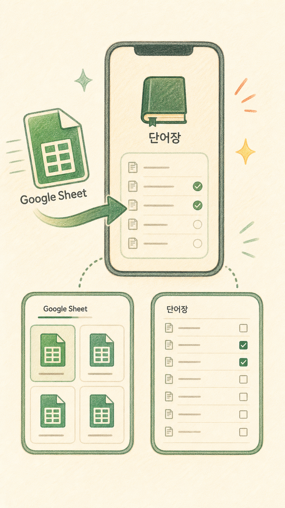
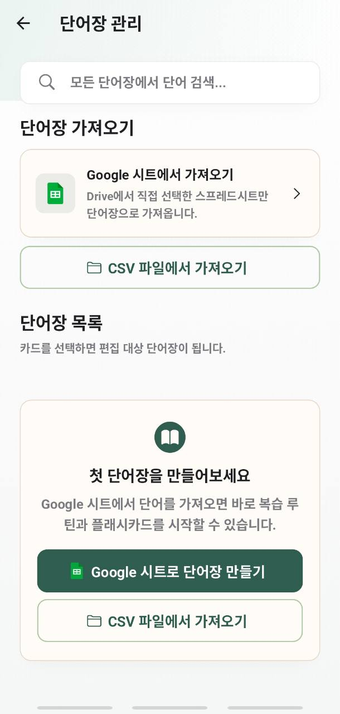
YOUR WORDS, A BETTER ROUTINE
Google 시트에서 시작해 플래시카드, 퀴즈, 복습, AI 시험지까지. Memorize Me가 흩어진 단어를 매일의 학습 흐름으로 바꿉니다.
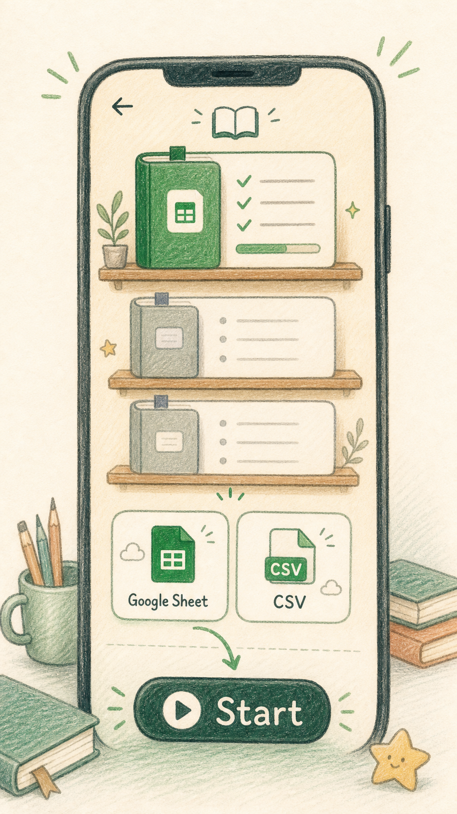
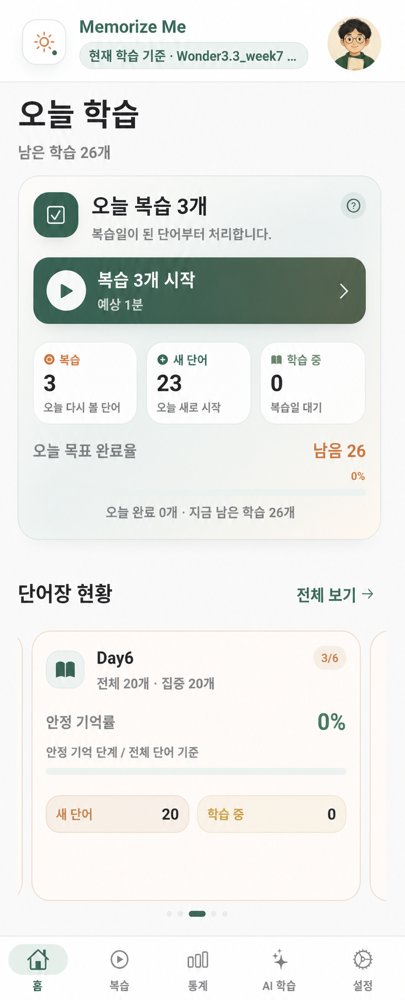
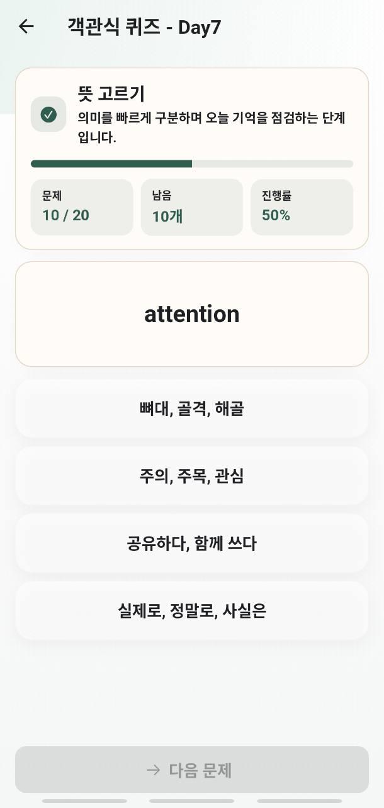
단어를 모으는 앱은 많습니다.
FROM SHEET TO MEMORY
자료를 준비하는 시간보다 실제로 떠올리고 확인하는 시간에 집중하도록 설계했습니다.
Google Drive에서 필요한 스프레드시트만 고르고, 학습할 시트를 선택하세요. 익숙한 자료를 다시 옮겨 적을 필요가 없습니다.
Google Sheets

플래시카드로 뜻을 떠올리고, 객관식과 스펠링 퀴즈로 기억을 꺼내 봅니다. 같은 단어도 다른 각도에서 반복됩니다.
Active recall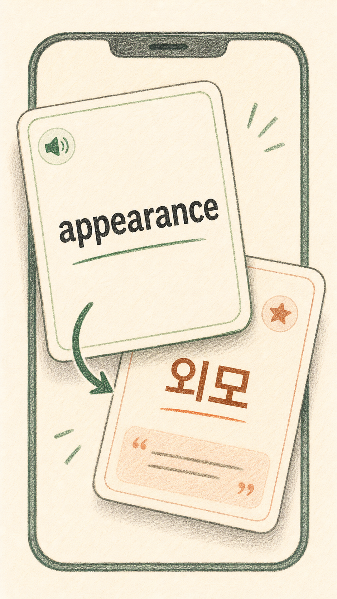
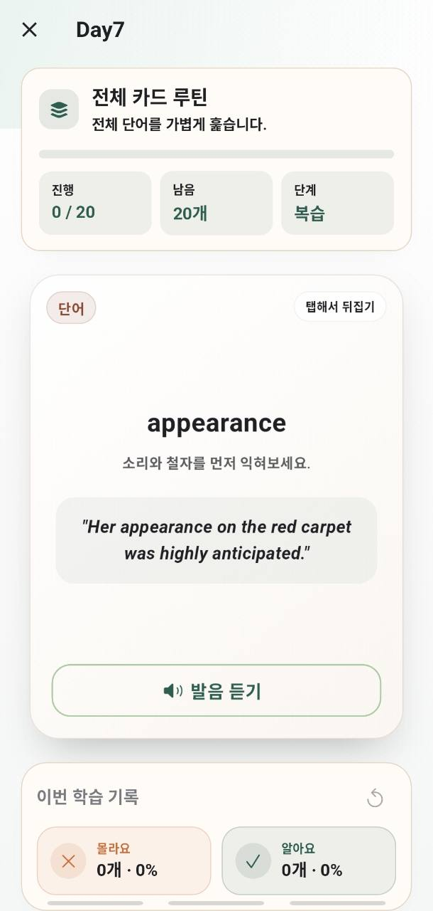
오늘 볼 단어와 새로 시작할 단어를 나누고, SRS 흐름에 맞춰 필요한 복습을 먼저 보여줍니다.
Spaced repetition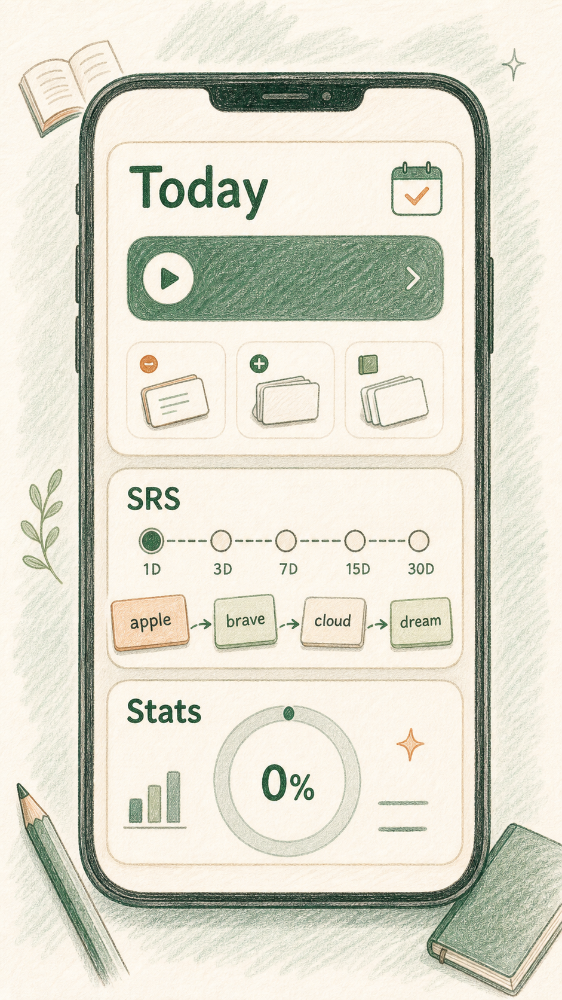
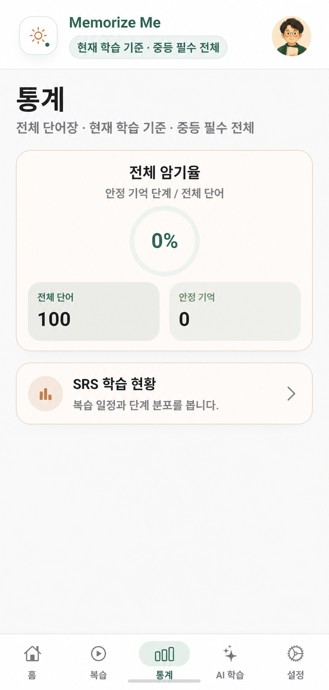
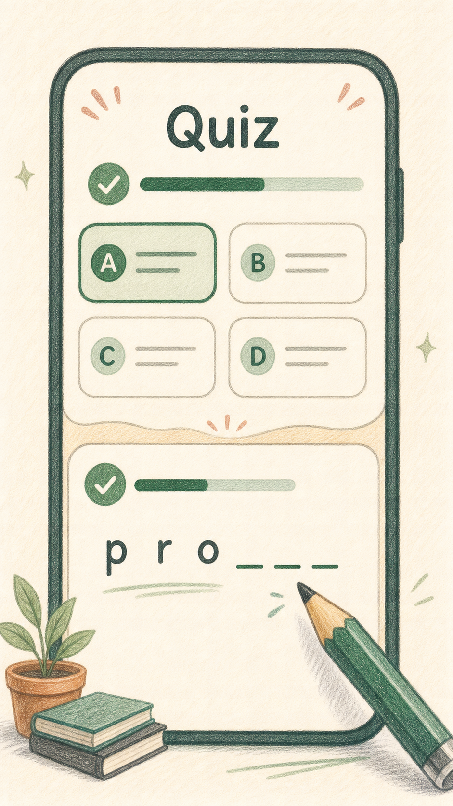
보고, 고르고, 직접 쓰기FOUR WAYS TO REMEMBER
뜻과 예문을 앞뒤로 확인하며 기억 단계를 올립니다.
비슷한 선택지 사이에서 정확한 의미를 구분합니다.
정답을 직접 꺼내 쓰며 기억을 단단하게 만듭니다.
생성한 문제를 PDF와 HTML로 정리해 활용합니다.
AI, WHERE IT HELPS
선택한 단어와 난이도에 맞춰 객관식, 문법, 독해 문제를 생성합니다. 완성된 문제는 화면에서 풀거나 시험지로 내보낼 수 있습니다.
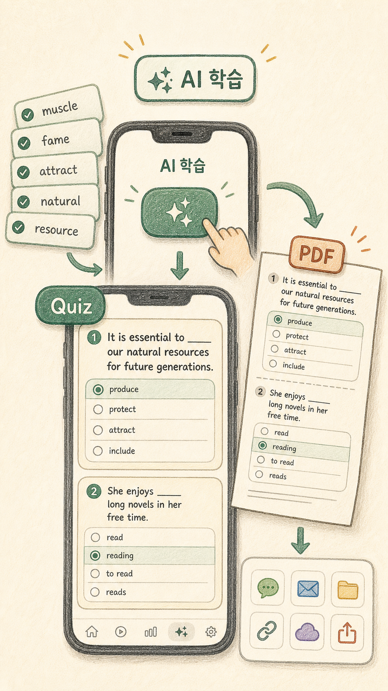
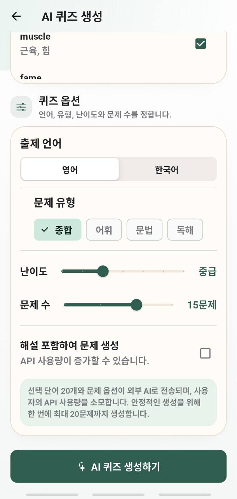
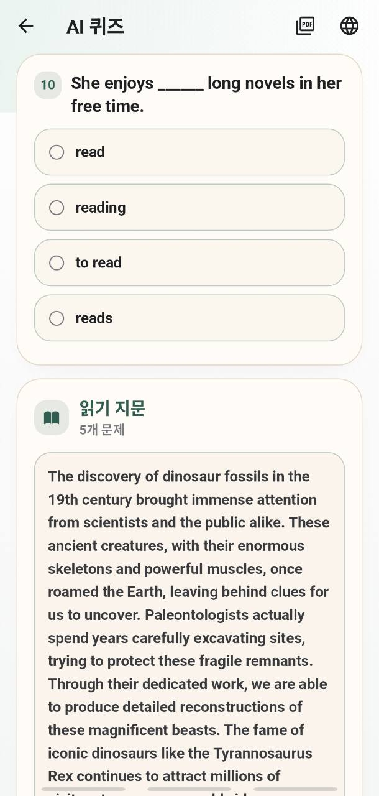
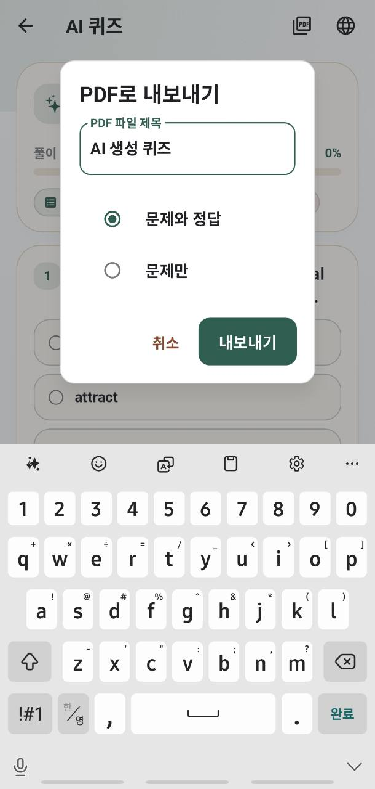
“자료는 이미 충분합니다.
이제 기억에 남게 공부하세요.
START WITH YOUR WORDS
익숙한 단어장을 그대로 가져오고, 필요한 만큼 학습하고, 기억의 변화를 확인하세요.